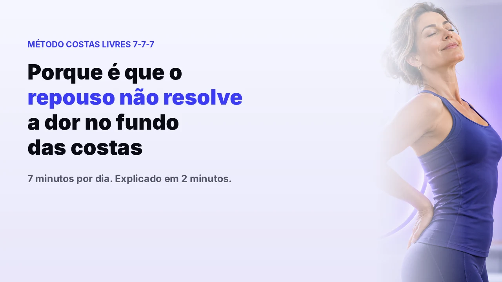
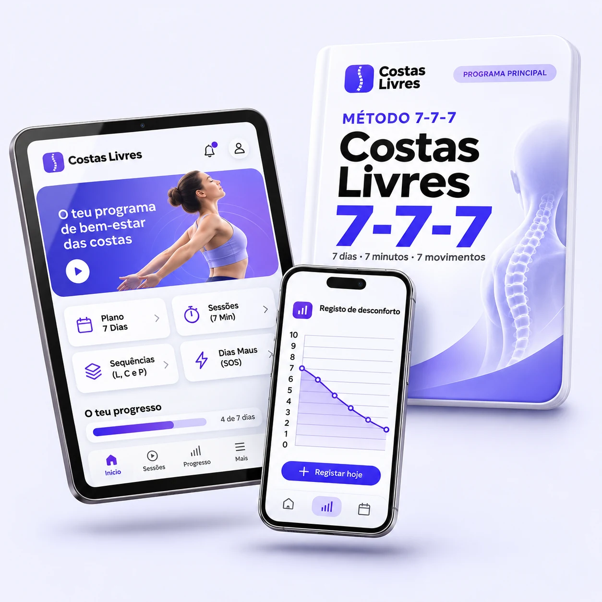
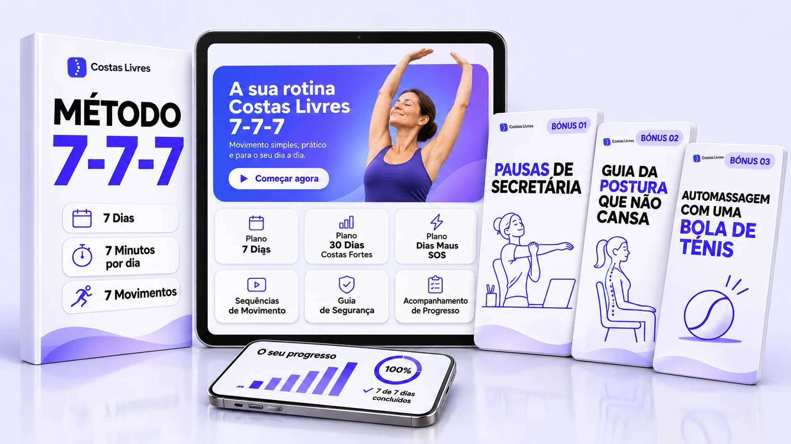

Um plano de 7 dias para quem já deixou de fazer coisas de que gosta por causa da dor na zona lombar.
14,90 € · pagamento único · garantia de 14 dias

Acorda outra vez. Não foi o barulho, não foi a sede. Foi aquela zona no fundo das costas que não deixa ficar de lado nem de barriga para cima.
Fica quieto uns minutos à espera que passe. Depois vira-se devagar, com cuidado, à procura da única posição que ainda dá. Quando o despertador toca, levantar-se é uma operação: primeiro sentar, depois apoiar a mão, depois endireitar aos poucos.
E o dia ainda nem começou.
E por trás disto tudo, o que incomoda mais nem é a dor. É o medo: e se piorar? E se for preciso cirurgia? E se um dia depender dos outros para coisas simples?
A dor não aparece do nada e não fica por acaso. Ela entra num ciclo que se alimenta a si próprio:
Dói → mexe-se menos para não doer → os músculos que seguram a lombar adormecem → a coluna passa a aguentar sozinha o que era para ser dividido → sobrecarga → dói mais.
Horas sentado na mesma posição mantêm a zona lombar em carga e os músculos de apoio desligados. O corpo não foi feito para ficar parado tanto tempo.
É o conselho mais dado e o que menos ajuda. As recomendações clínicas internacionais para a dor lombar comum — incluindo a norma NICE NG59 e as orientações da OMS de 2023 — apontam no sentido contrário: manter-se em movimento, de forma adequada, em vez de repouso prolongado.
Um vídeo hoje, outro daqui a uma semana, sem ordem nem progressão. Ou um plano pensado para quem já treina, que para quem tem dor é demasiado — e assusta logo ao segundo dia.
Dão alívio no momento. Nenhum deles acorda o que adormeceu. Por isso a dor volta sempre ao mesmo sítio.
14,90 € · pagamento único · garantia de 14 dias
7 dias. 7 minutos por dia. 7 movimentos. Em casa, no chão da sala, sem aparelhos e sem roupa de treino.
Tirar a tensão de cima da zona que dói. Movimentos lentos, de amplitude pequena, para o corpo perceber que mexer não é perigoso.
Voltar a ligar os músculos que estavam desligados e que deviam estar a ajudar a lombar a aguentar o dia.
Dar estabilidade, para o alívio não durar só até à próxima vez que se senta muito tempo.
Em menos de um minuto define qual a sequência certa para si. Não começa às cegas.
Antes de qualquer movimento, uma lista curta de sinais de alarme que indicam que o caminho é o médico, não um programa.
Suave e normal. Nos dias maus faz a suave. Nunca fica sem opção.
Anota como está cada dia. Ao fim de uma semana vê a evolução em números, não em sensação vaga.
Abre no telemóvel, no tablet ou no computador. Carrega no dia de hoje e segue.

Modo Sessão para seguir sem procurar · Diário da dor de 0 a 10 · acesso vitalício
"Já estou a seguir há quase duas semanas. É muito simples, prático e não ocupa quase tempo. Em 7 minutos já fico com aquela sensação de alívio e mais solto. Sinto-me com mais mobilidade e menos rigidez, principalmente depois de estar muito tempo no computador. Até o sono tem sido melhor."
— Tiago
"Estou na segunda semana e está a correr muito bem. Tenho sentido as costas mais soltas e já não fico tão preso depois de estar muito tempo sentado. Até a postura melhorou um bocadinho. São só 7 minutos, o que ajuda muito a manter a rotina."
— Carlos
Experiências individuais. Cada pessoa é diferente e os resultados variam.
Estes comentários são de pessoas que analisaram o programa, não relatos de resultados.
"Está muito bem pensado, é simples de seguir e tem uma organização excelente. O facto de serem apenas 7 minutos por dia, com movimentos adaptados a cada pessoa, é uma grande vantagem."
"A melhor parte é a forma como os exercícios estão organizados em três fases: Soltar, Acordar e Segurar. Especialmente haver uma versão suave de cada movimento, porque torna tudo mais simples e acessível."
Levantar-se da cama sem pensar nisso. Baixar-se para o neto sem calcular. Fazer a mala sem pedir ajuda. Voltar a ser quem era.
Pagamento único. Sem mensalidades.
MB WAY · Multibanco · Cartão
Não fazem parte dos 7 dias. São extras para depois, quando a rotina já estiver de pé.

Micro-pausas para fazer sentado, sem sair da cadeira e sem ninguém reparar.
Como estar sentado e de pé sem andar sempre a corrigir-se.
Alívio rápido com uma bola que custa dois euros.
Incluídos no mesmo preço. Nada a pagar à parte, hoje ou depois.
Entra, vê tudo, experimenta. Se nos primeiros 14 dias achar que não é para si, pede o reembolso total pela plataforma ou por e-mail para projetotkk@gmail.com. Devolvemos sem pedir justificações.
Daqui a um mês acorda da mesma maneira, levanta-se da mesma maneira e continua a adiar as mesmas coisas.
Daqui a uma semana já tem sete dias feitos e sabe, pelos seus próprios números, se isto funciona para si.
É uma decisão de 14,90 €.
Não. Só precisa de espaço para se deitar no chão. Para o bónus da automassagem precisa de uma bola de ténis, mas isso é opcional.
Serve. Cada movimento tem uma versão suave, pensada precisamente para quem tem menos mobilidade ou está com mais dor. Se tiver alguma condição diagnosticada, fale com o seu médico antes de começar.
Depende de cada pessoa. O programa está desenhado em 7 dias e a Folha de Registo existe exactamente para si ver, em números, o que mudou — em vez de ficar na dúvida.
Com um diagnóstico destes, a decisão é do seu médico ou fisioterapeuta, não nossa. Mostre-lhe o programa e pergunte. Se ele disser que não, use a garantia.
Dor aguda é sinal para parar. O guia de segurança explica a diferença entre o desconforto normal de um músculo que estava parado e a dor que indica que deve parar e procurar ajuda.
Não. São 14,90 € uma vez. Os bónus e as atualizações estão incluídos.
Acesso vitalício. Entra quando quiser, quantas vezes quiser.
Não. É tudo gravado, para fazer na sua hora, sem depender de horários.
O pagamento é processado pela Hotmart, com MB WAY, Multibanco ou cartão. Nós não temos acesso aos seus dados de pagamento.
Tem o Plano 30 Dias para continuar e o Plano Dias Maus para quando a dor aperta. Ambos já estão incluídos.
Nos primeiros 14 dias, pede pela plataforma ou envia um e-mail para projetotkk@gmail.com. Devolvemos o valor total, sem perguntas.
14,90 € · pagamento único · garantia de 14 dias
P.S. Faça o teste do sapato: descalce-se e volte a calçar-se sem se sentar. Se teve de pensar em como o fazer, o problema já não é só a dor — é a mobilidade que foi saindo sem avisar.
P.S. 2 Não vai encontrar aqui contador a correr nem "últimas vagas". O preço é este, hoje e amanhã. A única coisa que corre é o tempo que passa sentado.